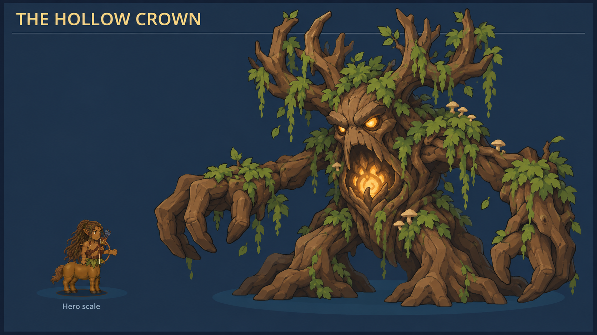
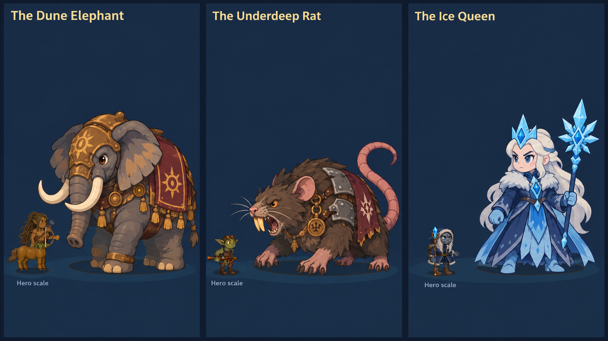
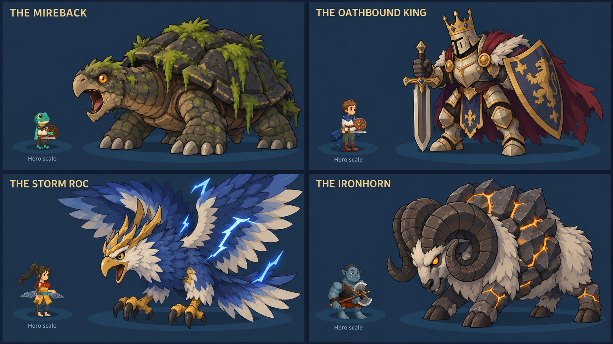
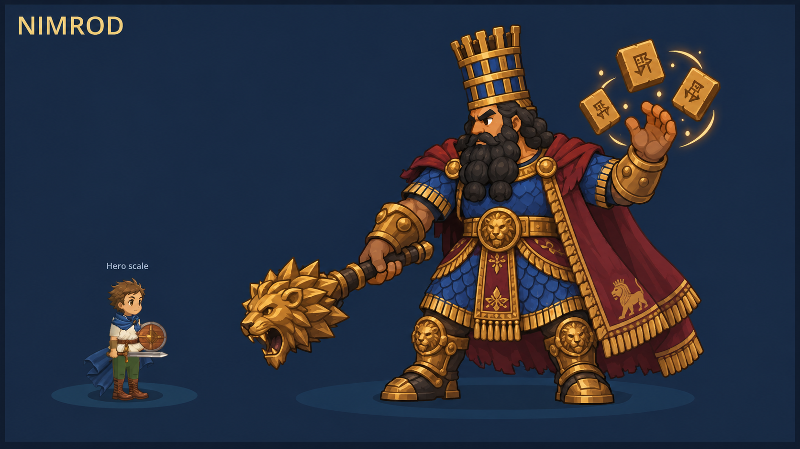

Boss designs · v2 · Pending approvalOne world. One character style.
Nine bosses restyled around the playable characters: compact proportions, bold outlines, broad color shapes, simple materials and soft shading. Small heroes provide a direct style and scale comparison. Select a sheet for its full-size image.
All moodboards use the original artwork. The Babylon v2 trial was reverted. These boss proposals remain separate and await approval.
The Hollow Crown

Dune Elephant · Underdeep Rat · Ice Queen

Mireback · Oathbound King · Storm Roc · Ironhorn

Nimrod
